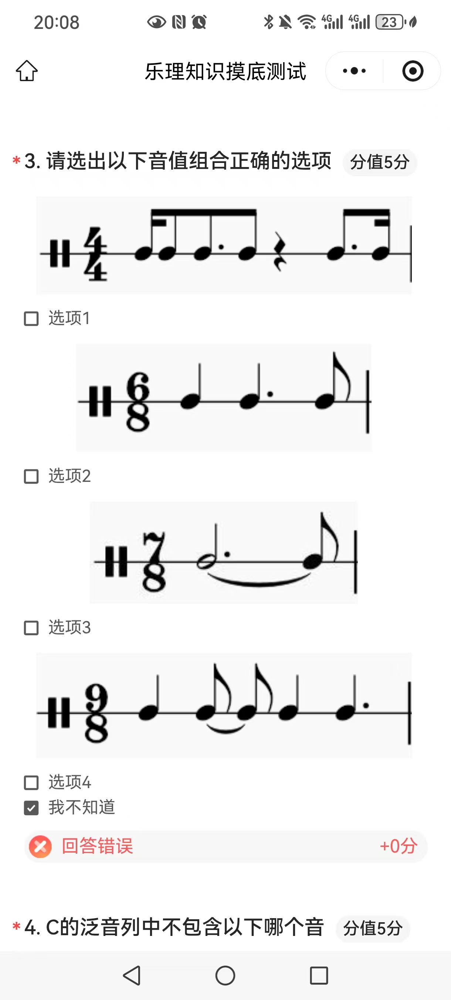

1. 先区分：拍号总时值 ≠ 拍子的内部结构
看到 4/4，当然可以说“一小节总共有四个四分音符的时值”；看到 6/8，也可以说“一小节总共有六个八分音符的时值”。但这只回答了这一小节有多长，没有回答这些单位之间怎样形成强弱层次。
2. 本书中的单拍子
按照本书的术语体系，每小节只有两拍或三拍的拍子叫单拍子。因此分子为 2 或 3 的常见拍号，如 2/4、3/4、2/8、3/8，属于单拍子。
单拍子的基本强弱规律可以理解为：
可以把一个单拍子理解成一个从强拍开始的基本拍组。
3. 本书中的复拍子
本书把由完全相同的单拍子结合而成的拍子称为复拍子。几个单拍子合并后，第一个单拍子的强拍仍是整个小节的强拍；后面各单拍子原来的强拍会降一级，成为次强拍。
为什么 4/4 = 2/4 + 2/4？
4/4 的四个四分音符位置并不是完全同级的，它的强弱层次是：
这里的“=”首先是在表达拍子结构的组合，而不只是做分数加法。第 3 拍之所以是次强拍，正是因为它对应第二个 2/4 单拍子原来的强拍。
为什么 6/8 = 3/8 + 3/8？
一个 3/8 单拍子的结构是“强—弱—弱”。两个相同的 3/8 组合起来，就形成 6/8：
所以 6/8 的关键不是“六个八分音符”，而是3 + 3 的组织方式。
从纯数学上当然有 6/8 = 2/8 + 2/8 + 2/8，但那会形成 2 + 2 + 2 的强弱组织，已经不是这里所说的 6/8 拍内部结构。拍号的理解不能只做分数运算，必须同时看强弱关系。
常见复拍子的结构
| 拍号 | 本书中的结构 | 可以记成 | 主要分组 |
|---|---|---|---|
| 4/4 | 两个相同的 2/4 | 2/4 + 2/4 | 2 + 2 |
| 6/8 | 两个相同的 3/8 | 3/8 + 3/8 | 3 + 3 |
| 9/8 | 三个相同的 3/8 | 3/8 + 3/8 + 3/8 | 3 + 3 + 3 |
| 12/8 | 四个相同的 3/8 | 3/8 × 4 | 3 + 3 + 3 + 3 |
4. 混合拍子：由不同的单拍子组合
如果组合起来的单拍子并不完全相同，本书把它归入混合拍子。例如五拍子和七拍子常见的组合方式为：
因此 7/8 不能只理解成“七个八分音符凑满一小节”，还必须知道这一小节具体采用哪一种内部组合。
5. 什么是“拍子的音值组合法”？
第十讲的出发点是：把各种时值的音符按照拍子的结构进行组合，使读谱者一眼能看出节拍组织。
做题时可以分两层检查：
- 总时值是否正确：这一小节的音符加起来有没有正好等于拍号规定的总长度；
- 结构是否清楚：音符、附点和连线有没有把重要拍点或单拍子之间的分界隐藏起来。
单拍子的基本原则
单拍子中，各单位拍之间应尽量看得清楚。当一个持续音跨过重要拍点而使拍子结构不明显时，通常需要把它拆成几个音符，再用延音线连接。
复拍子的基本原则
复拍子应先按构成它的单拍子分组，再在每一个单拍子内部按照单拍子的音值组合规则书写。例如：
所以在 6/8 中尤其要警惕把两个 3/8 之间的分界隐藏掉；9/8 则应能看出三个 3/8 的结构。
混合拍子的基本原则
混合拍子更需要把内部组合显示出来。若一个持续音覆盖了多个内部拍组，应根据拍子的结构次序拆成几个音符，并用延音线连接，而不是仅用一个很长的音符把整段盖住。
6. 结合题目：四个选项怎么判断？
这道题最适合用“先算总时值，再检查分组边界”的方法。

选项 1：4/4 错误
4/4 在本书中按 2/4 + 2/4 理解，同时每个四分音符拍点也应尽量清楚。题中有附点音值跨过拍点，虽然总时值可以凑满，但把拍点藏在一个附点音符内部，使节拍结构不够清晰。
判断重点：不是“加起来够不够 4/4”，而是有没有把应当看得见的拍点写出来。
选项 2：6/8 错误
6/8 的结构是 3/8 + 3/8，也就是 3 + 3。题中的长音跨越了两个 3/8 单拍子之间的分界，使这条最重要的内部边界看不出来。
选项 3：7/8 错误
7/8 属于混合拍子的典型情形，必须体现实际采用的 2+2+3、2+3+2 或 3+2+2 等结构。题中直接用一个很长的音值再接最后一个八分音符，虽然总时值等于 7/8，却看不出内部组合，因此不符合本章强调的音值组合法。
选项 4：9/8 正确
9/8 的结构是 3/8 + 3/8 + 3/8，也就是 3 + 3 + 3。题中的音符虽然有一个声音跨过分组边界，但它在边界处被拆开并用延音线连接，因此三个 3/8 的结构仍然清楚。
这恰好体现了延音线在音值组合法中的作用：声音可以连续，但节拍结构不能被写法遮住。
7. 一套稳定的做题流程
- 看拍号，先确定一小节总时值；
- 判断它在本书中属于单拍子、复拍子还是混合拍子；
- 如果是复拍子，先拆成相同的单拍子，例如 6/8 → 3+3；
- 如果是混合拍子，先确定具体组合，例如 7/8 → 2+2+3；
- 把题目中的每个音值换算成最方便观察的单位；
- 检查长音、附点音符有没有跨过关键分组边界；
- 若跨界导致结构被隐藏，通常应在边界处拆开并用延音线连接。
一句话记忆：拍号先告诉你“小节有多长”，强弱关系再告诉你“小节内部怎么分组”；音值组合法的目标，就是让这种分组在谱面上一眼可见。做题时永远先算总时值，再看拍点和分组边界有没有被藏起来。